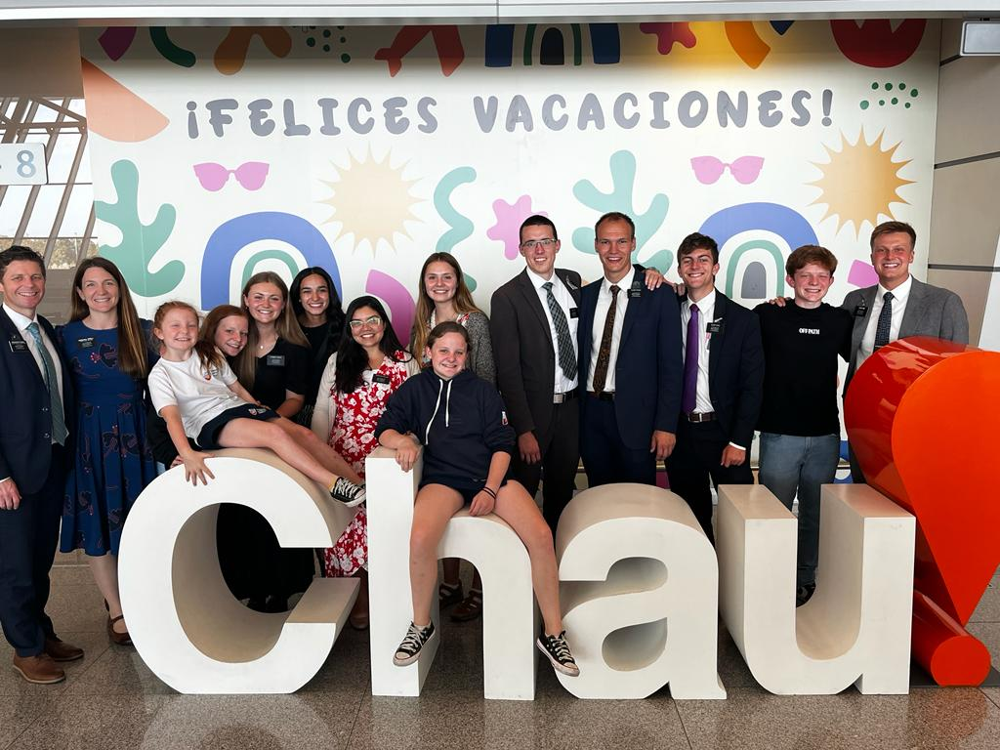

The story of how John and Nicole fell in love is like one out of a Hallmark movie. November of 2020, John recieved his mission call to the Uruguay Montevideo Mission. Due to covid, he was reassigned to the Winnipeg Canada Mission. In June of 2021, Nicole also reciveved her mission call to the Uruguay Montevideo Mission.
Thrilled for her daughter, Brandy posted about Nicole's mission call and later recived a message from an old friend.
Tyler, aka Elder Baker, was that old friend. Way back in the day, Tyler served in Arizona during the same time Nicole's dad (Jerry) was taking missionary lessons. Tyler had the opprotunity to teach Jerry about the gospel of Jesus Christ and he played a huge role in the baptism of Jerry. Tyler and Nicole's parents stayed in contact throughout the years.
When Tyler saw that Nicole was serving in Uruguay, he was excited to let my parents know that his nephew, John Zemp, would be serving in the same mission!
A few months later, John arrived to the Uruguay Montevideo Mission after being in Winnipeg for 8 months.
John and Nicole finally met and found it awesome that John's uncle and Nicole's parents had a crazy connection and were still good friends
What a small world! John and Nicole also found out they would be returning home the same day. They served together during their last transfer and then flew home to Canada and Arizona.
 John and Nicole getting ready to say goodbye to UruguayOnce they got home from their mission, Nicole messaged John and they hit it off right away. They started talking and both planned on going to their friends wedding in Idaho the following month.
They had their first date on May 13th and the rest was history. They started traveling back and forth from Arizona and Canada for a few months. In August, although Nicole moved to Utah for school, that did not stop John and Nicole from seeing each other each month.
They did long distance for 8 months, up until John moved down to Utah for "school". They got engaged in Canada on January 2, 2024 and are so excited to be married for time and all eternity in the Mesa, Arizona temple.